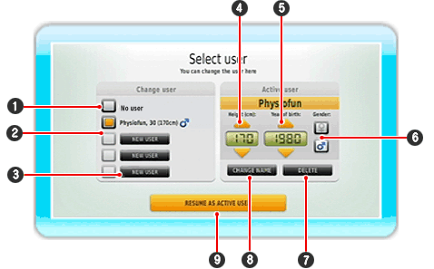

This is where you can register new users and change to playing in Physio or Fun modes, or compare your Balance Test results online.
When you start the Physio or Fun modes you will always be asked if you wish to play as the currently selected player. If no player has been selected, then you should first register or select another already registered player.

| 1 |
If you don't wish to select a user, click here.
|
| 2 |
This is where you can see already registered players with their data (Age, Height, Gender). The currently active player is shown by being marked with the orange field.
|
| 3 |
Click here to register a new user.
|
| 4 |
Enter the height of the user in cm. Use the arrow buttons for this or press  up or down. Hold down to speed up selecting the numbers. up or down. Hold down to speed up selecting the numbers.
|
| 5 |
Enter the date of birth of the user here using the arrow buttons. Hold down the button to speed up selecting the numbers.
|
| 6 |
Use the Wii Remote and point to the gender of the user and then press  . The gender selection will define whether you see a man or a woman during the exercises. . The gender selection will define whether you see a man or a woman during the exercises.
|
| 7 |
Delete the active player by pointing with the Wii Remote on the 'Delete' button and then press .
|
| 8 |
Modify the active user by pointing the Wii Remote at the 'Modify' button and then press .
|
| 9 |
Select this button in order to select the highlighted user and to return to the previous screen.
|